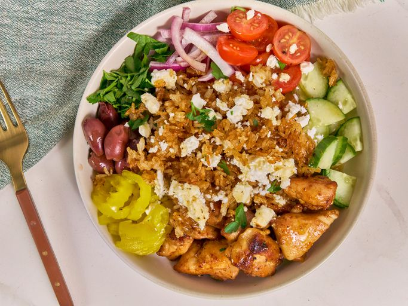

Mediterranean Crispy Rice Chicken Bowl
Home
Original Recipe

Description
This Mediterranean crispy rice chicken bowl features Greek flavors from seasoned chicken, tomatoes, Kalamata olives, feta cheese, banana peppers, and cucumber. It's dressed with a red wine vinaigrette, then topped with crunchy rice, crisped in the oven.
Ingredients
Chicken
- 1 1/4 pounds boneless skinless chicken thighs, cut into 1-inch pieces
- 4 tablespoons olive oil, divided, plus more for frying chicken
- 2 teaspoons Greek seasoning, divided
- 1/2 teaspoon paprika
- 2 cloves garlic, minced
- 1/4 teaspoon kosher salt
Dressing
- 1/4 cup olive oil
- 1 tablespoon red wine vinegar
- 1 tablespoon banana pepper brine
- 2 teaspoons honey
- 1 teaspoon Dijon mustard
- 1/4 teaspoon dried oregano
- 1/4 teaspoon kosher salt
- 1/4 teaspoon ground black pepper
- 1/4 cup water
Rice Bowls
- 3 cups cooled cooked rice
- 1 tablespoon soy sauce
- 1 cup cherry tomatoes
- 1 cup sliced, quartered English cucumber
- 1/2 cup thinly sliced red onion
- 1/2 cup banana pepper rings
- 1/2 cup chopped flat-leaf parsley
- 1/2 cup Kalamata olives
- 1/2 cup crumbled feta cheese
Steps
Step 1
- Preheat the oven to 400 degrees F (200 degrees C). Lightly grease a baking sheet or line with parchment.
Step 2
- Combine chicken, 1 tablespoon oil, 1 teaspoon Greek seasoning, paprika, garlic, and salt in a bowl. Stir until well coated; set aside.
Step 3
- For dressing, whisk olive oil, red wine vinegar, pepper brine, honey, Dijon mustard, salt, and black pepper together in a small bowl until well combined; set aside.
Step 4
- Combine cooked rice and soy sauce with remaining 3 tablespoons olive oil and 1 teaspoon Greek seasoning in a bowl. Spread rice onto the prepared baking sheet.
Step 5
- Bake rice in the preheated oven until rice is crispy and lightly browned, about 40 minutes.
Step 6
- Meanwhile, heat a small amount of oil in a skillet over medium-high heat. Add chicken and cook, undisturbed, until chicken is browned on one side and releases easily from the pan, 3 to 4 minutes. Continue to cook and stir until chicken is no longer pink at the center and browned on all sides, about 4 minutes more. Add water to the skillet and continue to stir until the bottom of the skillet is deglazed. Remove from heat.
Step 7
- To serve, divide chicken, tomatoes, cucumber, red onion, banana peppers, parsley, and olives among 4 bowls. Top evenly with crispy rice and feta cheese and drizzle with dressing.